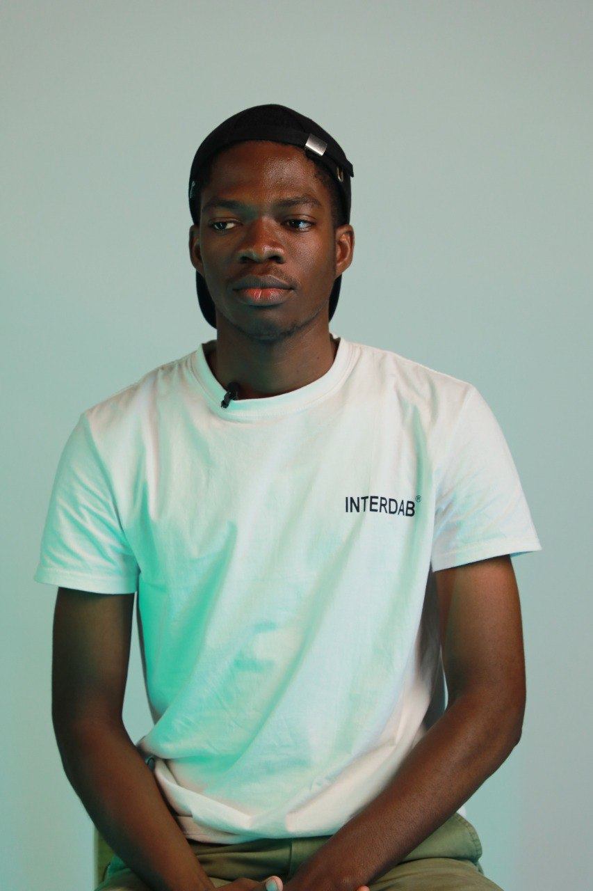

Je fusionne design stratégique, développement web et automatisation intelligente pour concevoir des solutions numériques qui ont du sens. Du pixel à l'interface, du code à l'agent AI.Je transforme chaque idée en une expérience impactante, pensée pour les humains et propulsée par la technologie.

Conception d'identités visuelles et interfaces utilisateur de A à Z. Direction artistique de campagnes digitales. Formation et encadrement des designers juniors, transfert de méthodes et élévation du niveau collectif.
Conception et déploiement d'agents AI et de workflows d'automatisation intelligents avec n8n. Création de pipelines connectant APIs, LLMs et outils métiers pour automatiser des processus complexes à haute valeur ajoutée.
Développement et déploiement de solutions web pour des structures béninoises. Architecture front-end, intégration des contenus, mise en ligne et formation des équipes clientes.
Application conçue lors du Hackathon Numérique de l'AUF. Interface pour la mobilité urbaine locale, mise en relation conducteurs/passagers sous contrainte temporelle intense.
Plateforme d'accompagnement à la mobilité internationale vers l'Allemagne. Design empathique, orientation dans les démarches administratives, interface claire et rassurante.
Ouvert aux collaborations, missions freelance et projets à impact.
Démarrer une conversation